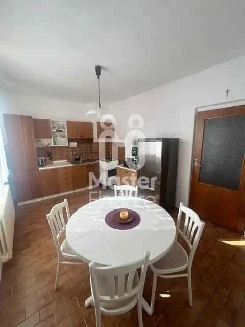
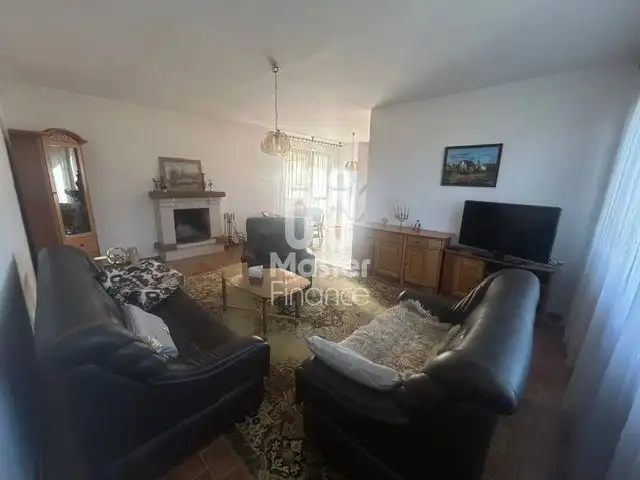
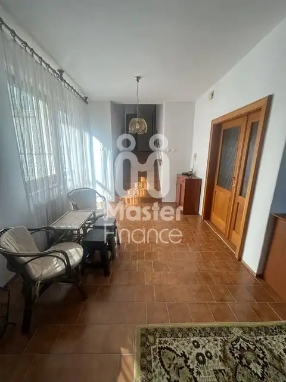
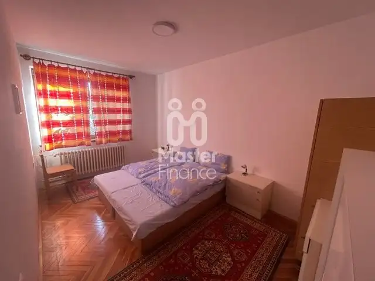
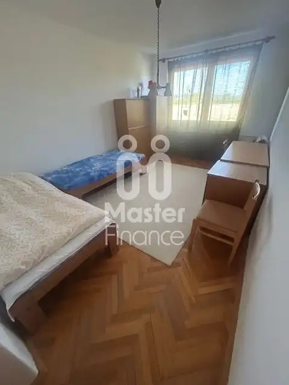
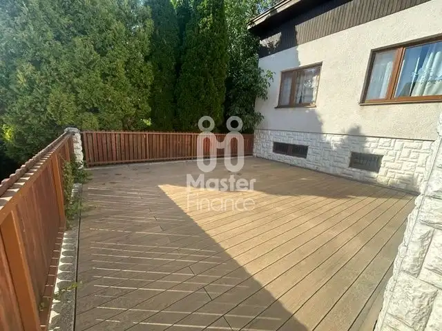
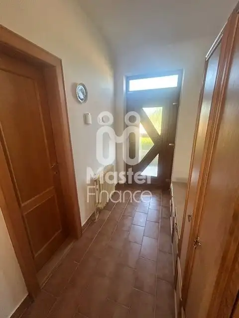
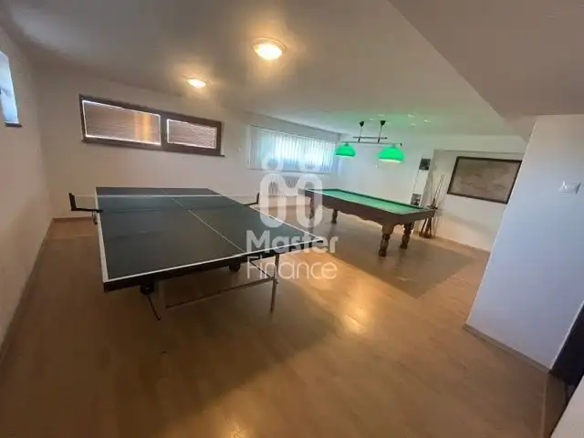

Znížená cena !!! Priestranný 5-izbový kaskádový rodinný dom s krásnym pozemkom – Chynorany
Chynorany








- Plocha300 m²
- StavČiastočná rekonštrukcia
- VlastníctvoOsobné
O nehnuteľnosti
Hľadáte pre svoju rodinu dom s veľkorysým priestorom, skvelou dispozíciou a výbornou občianskou vybavenosťou? Táto ponuka je presne pre vás. Ponúkame vám výnimočnú príležitosť na kúpu kaskádového rodinného domu v pokojnej obci Chynorany, v časti Primánske .Tento slnečný dom s krásnymi výhľadmi a priateľskými susedmi je vďaka svojmu architektonickému riešeniu ideálny pre väčšiu rodinu alebo ako dvojgeneračné bývanie.Plocha pozemku: 1 003 m² (rozmery pozemku: šírka 20 m x dĺžka 50 m)Stav nehnuteľnosti: Čiastočná rekonštrukcia (veľmi dobrý technický stav)Rok výstavby: 1987Konštrukcia: Pórobetón (Ytong), strešná krytina: plechInžinierske siete: Obecný vodovod, odpad napojený na kanalizáciu, elektrina, plyn, vlastná studňa na pozemkuKúrenie a ohrev vody: Plynový kotolInternet: V obci je nová optická sieť (Telekom, 4ka)DISPOZIČNÉ RIEŠENIE NEHNUTEĽNOSTI:Dom prekvapí svojou premyslenou kaskádovou dispozíciou, ktorá poskytuje maximálne súkromie pre všetkých členov domácnosti. V izbách sa nachádzajú kvalitné drevené parkety, v ostatných častiach je keramická dlažba.PRÍZEMIE: Vstupné dvere vás privítajú v predsieni, z ktorej sa prechádza do samostatnej toalety a dominanty domu – priestrannej haly s krbom, ktorá ponúka priamy výstup na terasu. Ideálne miesto na rodinné večery.POSCHODIE: Nočná časť domu pozostáva z 3 samostatných spální, kompletne vybavenej kuchyne so špajzou a veľkej kúpeľne (s vaňou, sprchovým kútom a toaletou). Z tohto podlažia vedú schody do suterénu.SUTERÉN (čiastočne zapustený): Multifunkčný priestor, kde nájdete ďalšiu obytnú izbu, druhú kúpeľňu s toaletou, relaxačnú saunu, komoru, technickú miestnosť a veľkú herňu (ktorú je možné v prípade potreby jednoducho prerobiť na dvojgaráž). Zo suterénu vedú schody do pivničnej dielne , východ na záhradu.ZÁHRADA A EXTERIÉR:Pozemok s výmerou vyše 10 árov je oázou pokoja. Nájdete tu krásne miesto na relax, vzrastlé stromy, úžitkovú časť na pestovanie a vlastnú studňu. Obrovským benefitom je tradičná vonkajšia pivnica, ktorá je perfektná na celoročné uskladnenie ovocia, zeleniny či dobrého vína.VÝBORNÁ LOKALITA A OBČIANSKA VYBAVENOSŤ:Obec Chynorany patrí medzi vyhľadávané lokality vďaka kompletnej občianskej vybavenosti. Priamo v obci sa nachádza:Materská škola a Základná škola Zdravotné stredisko (lekár, lekáreň)Pošta, obchody s potravinami a reštaurácie.Skvelá dopravná dostupnosť: obec má výborné vlakové a autobusové spojenie.Vzdialenosti: len cca 12 km do okresných miest Topoľčany (TO), Partizánske (PE) a Bánovce nad Bebravou (BN). Krajské mestá Nitra (NR), Prievidza (PD) a Trenčín (TN) sú vzdialené približne 50 km.HODNOTENIE MAKLÉRA:Dom je vo veľmi dobrom technickom stave, ihneď obývateľný s možnosťou modernizácie podľa vlastných predstáv. Vďaka veľkej úžitkovej ploche, krbu, saune a krásnej záhrade ponúka nadštandardné bývanie pre rodinu, ktorá hľadá pokoj vidieka, no nechce prísť o komfort mestskej infraštruktúry.Pri serióznom jednaní a ponuke je dohoda na cene možná.Nečakajte, kým vám táto jedinečná ponuka prejde pomedzi prsty! Dohodnite si obhliadku ešte dnes.KONTAKT PRE OBHLIADKY:Maklér: Zuzana DanákováTelefón: 0902 301 657E-mail: danakovazuzana@gmail.com
Parametre
- Druh
- Rodinný dom
- Druh domu
- Rodinná vila
- Dátum zverejnenia
- 03. 07. 2026
- Dĺžka pozemku
- 50
- Energetický certifikát budovy
- nie je
- Plocha pozemku
- 1003 m²
- Počet kúpeľní
- 2
- Počet nadzemných podlaží
- 1
- Počet spální
- 4
- Rok výstavby
- 1987
- Stav nehnuteľnosti
- Čiastočná rekonštrukcia
- Terén pozemku
- Rovinatý
- Typ
- Predaj
- Typ konštrukcie
- Pórobetón (Ytong)
- Vlastníctvo
- Osobné
- Vybavenie
- Technická miestnosť
- Zastavaná plocha
- 329 m²
- Úžitková plocha
- 300 m²
- Šírka pozemku
- 20